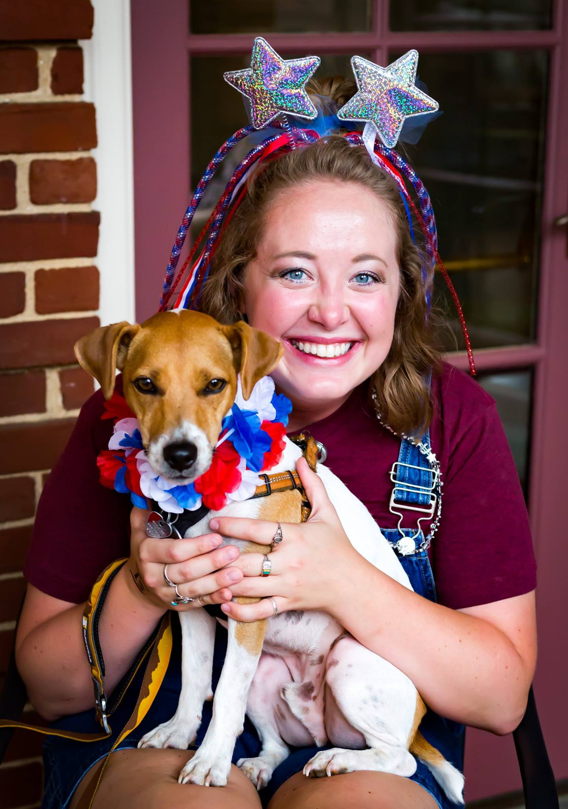

I love our Jonesborough community!



I was born and raised in East Tennessee and chose to build my life in Jonesborough after graduating from East Tennessee State University in 2015. I began my career with Jonesborough Locally Grown at Boone Street Market, and it's here in Washington County that my values feel most alive. This isn't just where I live — it's where I've invested my time, energy, and heart.
I serve as Director of Equitable Nutrition & Food Access with the Appalachian Resource Conservation & Development Council, supporting conservation, local agriculture, and community-based initiatives. I currently chair Keep Jonesborough Beautiful and am active with Slow Food Tri-Cities. I've also contributed to long-range planning through Johnson City Horizon 2045 and supported affordable housing efforts with Unity Housing.
My time with One Acre Cafe deepened my commitment to food access with dignity. I've volunteered with community events like Meet the Mountains and Blue Plum Festival, celebrating our region's culture and local businesses.
Outside of work, you'll find me gardening, hiking Northeast Tennessee trails, or near the water with my Jack Russell, Banjo. I care deeply about smart land use, healthy waterways, local food, and civic engagement — and I believe County Commission decisions should protect the land, water, and quality of life we pass on to the next generation.